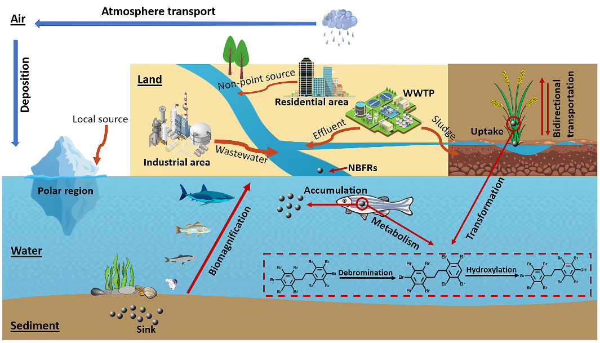

MODULE 1
INTRODUCTION AUX RETARDATEURS DE FLAMME BROMES
Les retardateurs de flamme bromés sont des composés chimiques utilisés dans de nombreux objets et matériaux. Ils sont notamment présents dans les plastiques, dans les textiles, et surtout dans le matériel électronique. Leur rôle est de retarder la propagation des flammes.
Les BFR sont des molécules contenant de nombreux atomes de brome. Ils présentent également souvent des noyaux aromatiques, reliés soit par une chaine carbonée, soit par une fonction éther, dans le cas des polybromodiphényles éther (BDE). Des fonctions alcool peuvent aussi être présentes. Leurs structures sont à la fois plutôt similaires, et en même temps très variées.
Voici quelques propriétés physico-chimiques des BFR :
1. Polarité : Du fait de la présence de noyaux aromatiques, et de la faible différence d'électronégativité entre les atomes de carbones et de bromes, les BFR sont généralement apolaires.
2. Volatilité : Les BFR sont considérés comme semi-volatils. Ils peuvent ainsi s'évaporer lentement à température ambiante et se retrouver dans l'air, ce qui facilite leur dispersion sur de grandes distances.
3. Bioaccumulation : Les BFR sont généralement lipophiles, ce qui signifie qu'ils ont une affinité pour les graisses et les huiles. Cette propriété contribue à leur tendance à s'accumuler dans les tissus vivants, et donc à s'accumuler dans les organismes vivants et à persister dans l'environnement
4. Dégradation et persistence: Les BFR se dégradent très lentement par des processus naturels tels que la photodégradation, la dégradation microbienne et la dégradation chimique. Ainsi, ces processus sont souvent insuffisants pour éliminer complètement les BFR de l'environnement.
Les retardateurs de flamme bromés, vous l'avez maintenant compris, ne sont pas constitutifs d'un matériau en tant que tel, ils ne sont donc pas liés au matériau par des liaisons chimiques. Les retardateurs de flamme bromés sont des « additifs » ils peuvent alors facilement être relargués dans l'environnement sous certaines conditions, comme dans l'eau, l'air, le sol, les sédiments, etc. et atteindre les êtres vivants.
Quel est leur impact sur l'environnement ?

Les BFR sont des polluants difficilement traités dans les stations d'épuration. Les effluents des stations d'épuration sont donc d'importantes sources de BFR dans l'environnement. Ceux-ci étant hydrophobes, ils ne resteront pas dans l'eau, mais s'accumuleront facilement dans les sédiments ou dans les sols. Ces polluants vont également être très présents dans les boues d'épuration, qui peuvent ensuite être utilisées pour de l'épandage, polluant ainsi de nouveaux sols. Le lessivage des sols par la pluie va également constituer une importante source de pollution vers les mileux aquatiques terrestres comme marins.
Une autre importante source de pollution est les fumées d'incinération des décharges, notamment de matériel informatique. Ces particules sont alors transportées sur de longues distances, leur permettant d'atteindre des zones reculées comme les régions polaires.
Il a été prouvé dans de nombreuses études que les BFR peuvent sont très facilements absorbés par les plantes et organismes vivants, et se bioaccumulent et se bioamplifient dans la chaine trophique..Certains composés peuvent notamment faire apparaitre des effets délétères aigus ou chroniques, lors d’expositions à basse dose. Certaines études ont notamment confirmé leur effet neurotoxique, immunotoxique, génotoxiques et reprotoxiques, et ce pour les invertébrés, les poissons et les mammifères.
Du fait de leur forte persistence et toxicité, certains composés tels que les BDE et les octa-BDE ont alors été listés comme Organiques Persistants (POPs) à la convention de Stockholm de 2009. Les hexabromocyclododécanes (HBCD) ont également été rajoutés en 2013, puis les déca-BDE en 2017. Ces composés sont donc maintenant interdits d'utilisation et de production.
Alors que ces BFR ont été progressivement délaissés, de nouveaux retardateurs de flamme bromés (NBFR) ont été introduits sur le marché. De structures similaires aux BFR, ces nouveaux composés ont alors été utilisés comme alternatives. Ils ont été détectés dans l'environnement pour la première fois en 1970, et leur production, utilisation et détection n'a fait qu'augmenter depuis. Leur toxicité est encore peu connue actuellement, mais elle est suspectée comme étant similaire à celle des BFR...